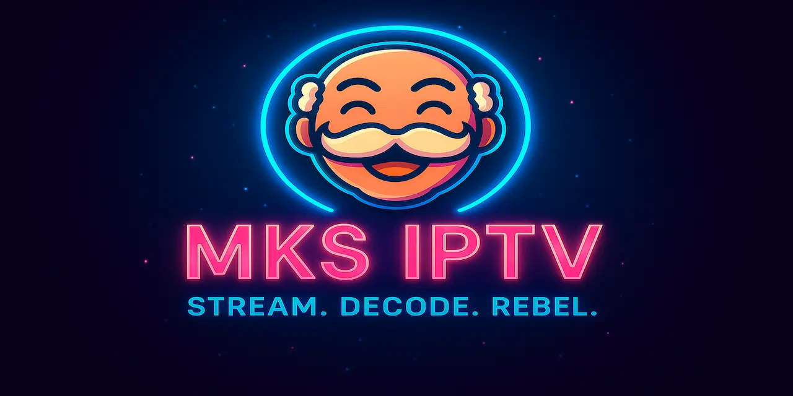

MKS-IPTV-App Documentation
A native, multiplatform IPTV client for the Apple ecosystem, built with Swift 6 & SwiftUI.


🗺️ Quick Navigation
| 📥 Downloads | Get the latest builds for all platforms. |
| 🛠️ Installation Guide | Step-by-step instructions to get you started. |
| 📸 Screenshots | A visual tour of the app’s features. |
| 🐙 GitHub Repository | View the project source and contribute. |
✨ Core Features
- Native Apple Experience: Built with Swift & SwiftUI for optimal performance and integration.
- 📺 Live TV & VOD: Stream your favorite live channels, movies, and series.
- 📥 Advanced Downloads: Download content for offline viewing with progress tracking.
- 🎨 Liquid Glass Design: Featuring the latest UI patterns from iOS 26.
- 💻 Multi-platform: Works seamlessly across iOS, macOS, and tvOS.
💬 Support
Need help? Have a question or a feature request?